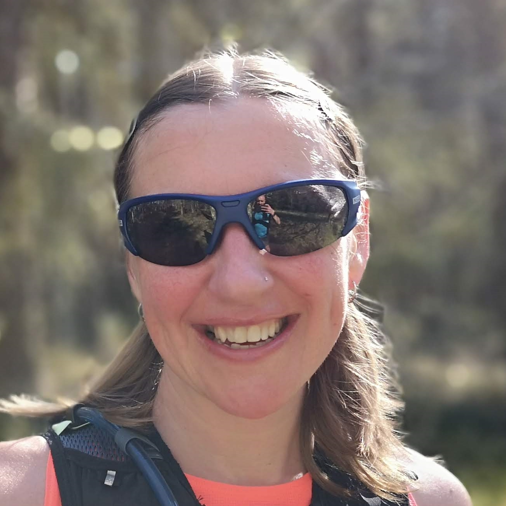

Hi, I'm Lexi and I've been working at Mountain Top Guides for 5 years.
I have been working in the outdoor industry for many years. I was a rock
climbing instructor in California for 6years before moving to Dubai to
become a watersports instructor. Although it was great fun out there I
wa missing home, so I returned to the UK to become a qualified Mountain
guide. I passed my WMCI back in 2016 and joined Mountain Top Guides in 2017.
If I'm not venturing out into the hills of the UK you will find me splashing
about somewhere off the wonderful west coast of Scotland.